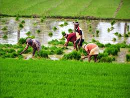

Farmers Club
About Farming
Agriculture is everything related to the cultivation of plants 🥦 and animals 🐮, which will be used for other purposes. This is not the definition you will find in the dictionary, but it is practical and accurate. It covers productive agriculture as well as everything before and after the farm 🥒.
Types of Farming
Arable farming
Problems
Pollution, Erosion, Contamination , Pests, Rainfall, Drought, Weeds, Climate and Diseases.